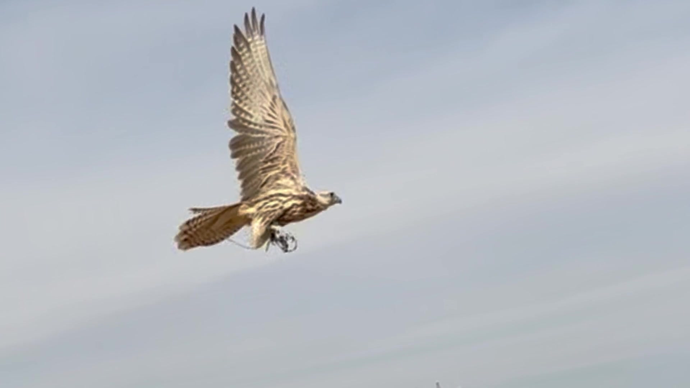
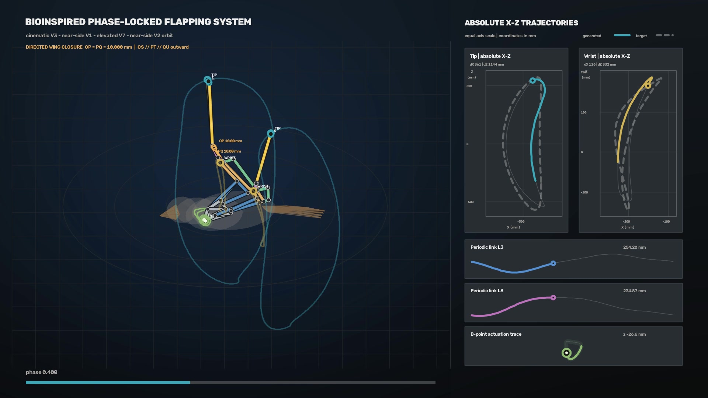

A
From flight footage to motion targets.
Track the wrist and wingtip to capture
the movement that a mechanism should reproduce.
BIO-INSPIRED FLIGHT PROGRAM
From a flying platform to richer,
more coordinated wing motion.
01 / THE FOUNDATION
EXISTING PLATFORM
A two-joint, two-degree-of-freedom
flapping-wing platform that can fly.
The next step is to reproduce a wider range of coordinated movements seen in real bird wings.
02 / RESEARCH IN MOTION
Mechanism development target
Track the wrist and wingtip to capture
the movement that a mechanism should reproduce.
Extend an established mechanism and optimize
link lengths and periodic motion.
STRUCTURE 3 joints · 5 degrees of freedom
+INTELLIGENT OPTIMIZATION Link lengths · Periodic motion
→DESIGN DIRECTION Closer to biological wing motion
Alongside mechanism development, we are exploring wind-tunnel methods for extracting real-bird wing trajectories. A robotic bird serves as a surrogate while we investigate camera settings and multi-view synchronization, select imaging and lighting hardware, and design calibration and test procedures. This work prepares the measurement approach for future studies of biological flight.
 SETUP CONCEPT
SETUP CONCEPT03 / THE NEXT CHAPTER
Two parallel paths.
One integrated research platform.
 DESIGN CONCEPT
DESIGN CONCEPTTurn the articulated-wing design into a manufacturable, assembled mechanism.
 ILLUSTRATIVE FLIGHT PHASES
ILLUSTRATIVE FLIGHT PHASESExtend real-bird motion measurements across three flight conditions.
03 / INTEGRATE & VALIDATE
Use measured wing motion to refine the mechanism, then evaluate the physical prototype.


Concept illustrations communicate the research direction; they do not document completed hardware or experiments.